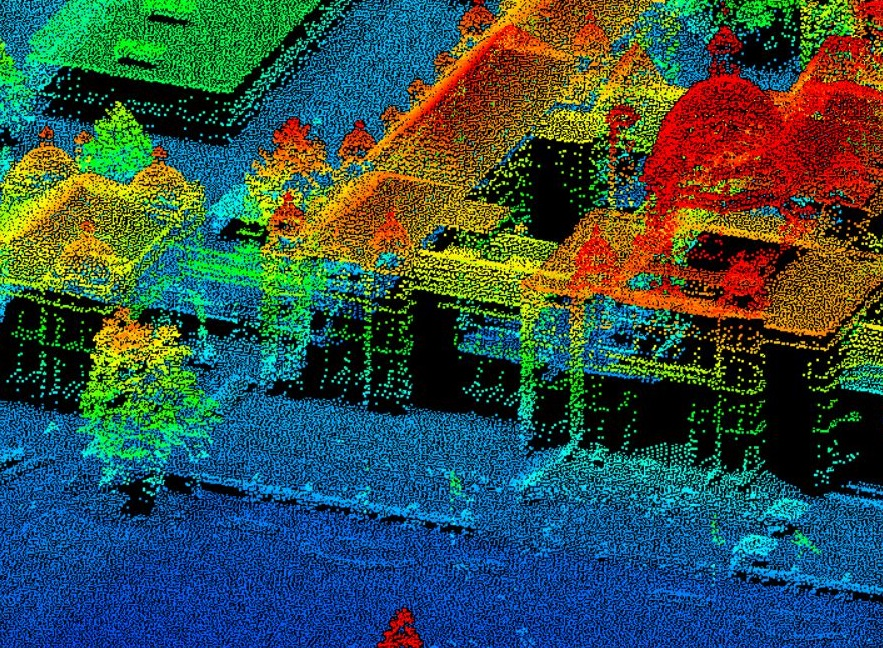
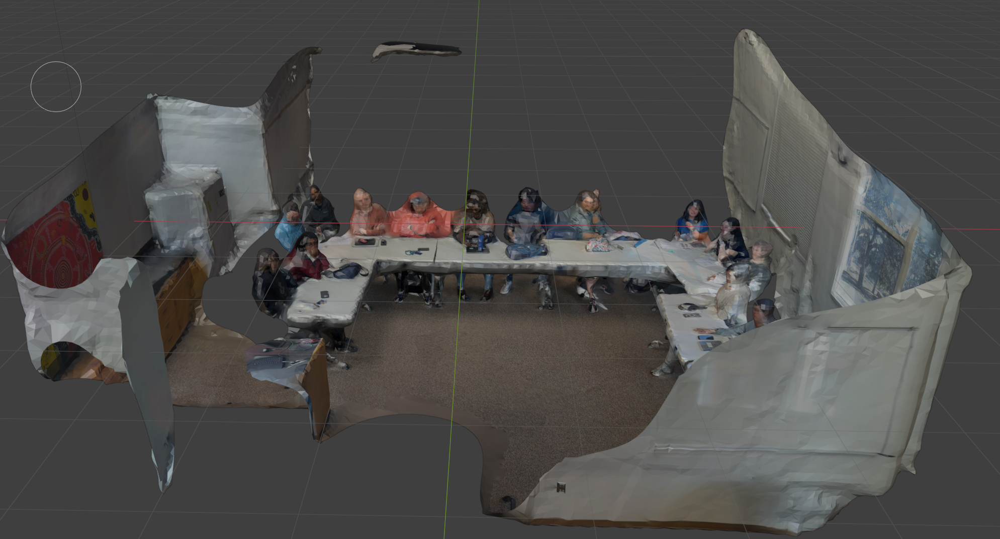
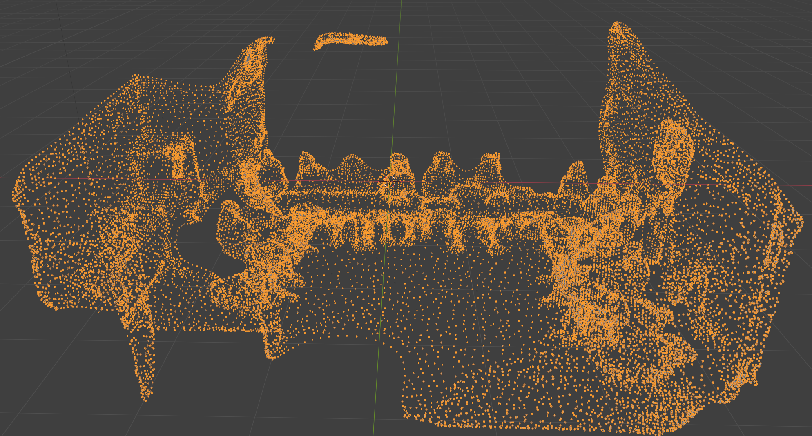
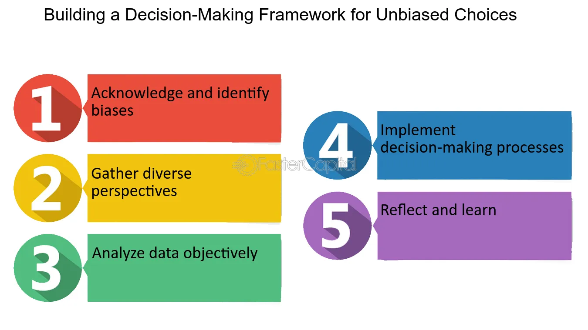
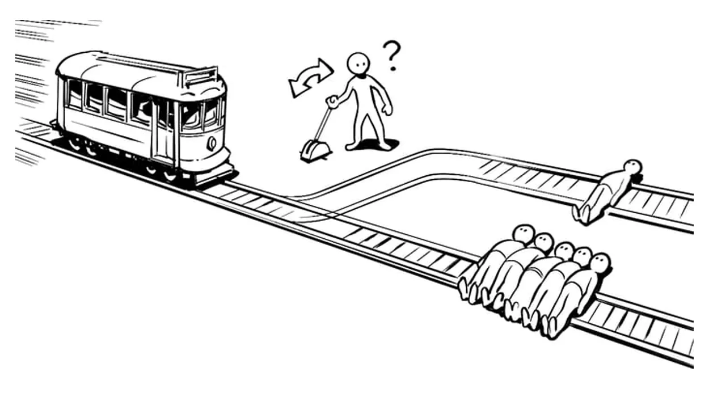

Everyday Tech Project
This page is under construction and is intended for future work in class CS302.
Everyday-Tech Construction and Deconstruction
Tech Construction
Project Overview
Our project was centered around Autnomous car, with a focus on their employment of
LiDAR sensors
for object, location, and people detection. We introduced our tech concepts with an
explanation of
what autonomous cars are, their current use, and what core tech they are made of. We
then shifted gears
into making distintions between the categorizations of autonomy a car can be given,
based on the
extent that technologies within them reduce human input (Faisal et al., 2019). The content after this
overview was focused solely
on how LiDAR works, and the data that it provides. This also included a brief
explanation on the limitations
of LiDAR and examples of softwares that could be used to demonstrate the 3D models
that LiDAR produced. Leading way
into our tech demo for LiDAR sensors. Were we utilized the LiDAR present in iphones
to create a rough model of
the classroom, and display the visualization of the data that LiDAR captures. We
then switched to talking about the philasophical
frameworks we applied to our technology. Focusing on utilitarianism and actor
network theory, and how they encompassed
autonomous cars.

Indepth Tech Explainer
The main focus for our everyday tech was LiDAR sensor technology, but we did highlight autonomous cars as a whole. So this explanation will highlight and explain core technical concepts for both. Autnomous cars rely heavily on training just like LLMs, and their decision making along with their detection is maximized with more extensive datasets. Notably, they also employ a multitude of technologies like radar, GPS, LiDAR, cameras, and ultrasonic sensors to name a few. They combine these sensors to provide accurate mapping and actively monitor what is currently happening in the surrounding area. So they know what choices to make, and what to look out for when driving around. Some of these sensors like radar, perform similar tasks to another sensor like LiDAR. However, each of these have their strengths and weaknesses. Radar does not pick up as much detail as LiDAR, but its great at detecting glass and other transparent surfaces (unlike LiDAR). Hence this fusion of sensors is essential for autonomous car reliability and data collection to improve driving (Ali et al., 2026).
For LiDAR we covered the essential techniques that it utilizes
to capture data. The
sensor itself emits millions of pulses
of light, and every single one of these light pulses is tracked. So the time it
takes for the light to return to the sensor is
measured and used to determine the distance of the object or person from the person.
As this is done for all of the light pulses, what is created is thousands if not
millions
of point clouds that contain the specific 3D coordinates of where the light bounced
back.
This is then used to create the actual 3D model/mapping of the region scanned by the
sensor.
Point clouds are simply points that exist in the 3D space, where they contain a
specific
x,y, and z value. An image to visualize these point cloouds is shown below. Note
that distance
from the sensor is highlighted by the different colors of the points (red is closer,
and blue is further away).
You can also use softwares like Blender, CAD, or Solidworks to visualize the 3D
models that LiDAR
sensors create. We utilized Blender in our demo, as it allows to import files that
contain the point clouds
mentioned above.
Below is a video depcting the LiDAR sensor on a Waymo. It's constantly rotating to
continually
capture a 3D image render of its surrounding. Helping with the object and pedestrian
detection I
mentioned above.

Visualizer of how LiDAR works
Hardware tutorial for in-class demo
LiDAR sensors are generally quite expensive and hard to obtain
outside of industrial or commercial needs. To eliminate this barrier
we used an iphone pro model that uses a LiDAR sensor for some of its features.
It's not entirely accurate and lacks the detail capture that more expensive
LiDARs can capture, but it helped us showcase the technical capabilities of the
sensor.
To create the render we downloaded Polycam, which uses the LiDAR sensor
and camera on the iphone to generate a 3D model you can download and import
to softwares like Solidworks, CAD, or Blender.
Four our demo we used Blender, and imported
the file generated by the Polycam capture on the iphone (glTF format). After importing
the file
we displayed the different things you could showcase in the software (what was contained
in the capture).
You could visualize the point clouds, or show the color that the camera on the phone
captured.
We didn't modify the model, but Blender does allow you to change the geometry of the
capture or add color
to it.
Below is the capture we obtained during our live demo. The first image shows the color
and helps
visualize the classroom. The second image shows the actual data captured by the LiDAR,
individual point
clouds that map out the objects and people.

Demo capture with color

Point clouds data captured during demo
Video clip from Unbox Therapy showing the LiDAR sensor on a Waymo
Reflection On In Class Discussions and Presentation
Reflection On Philasophical Approaches Utilized On Our Tech
Autonomous cars are getting deployed across more and more cities, including
Minneapolis.
I thought they would still be confined within major cities until the technology was
fully
developed, but they are garnering more and more attention as well. It's not uncommon
for me
to have a video of an autonomous car pop up in my social media feeds. The videos
tend to be
a mixed of positive and cheerful attitudes towards the technology, while others show
disdain
at the mistakes the cars tend to do at times. I had never thought of the policies or
decision
making that goes into the choices that the cars themselves make depending on their
current situations.
Just as humans are often placed in unfavorable conditions and have to make split
second decisions while
driving, autonomous cars do the same. Utilzing a utilitarianism approach would mean
placing more value
in what leads to the greater outcome, and often humans don't have the capbility to
do this in
a fraction of a second. Autonomous cars on the other hand can see all around them
and have
awareness that can surpass that of a regular driver. If we place a greater value in
saving the most
amount of human lives, then an autonomous car could likely calcutate the value of
the most optimal
outcome in a split second and make the best decison in a dire situation.
Unlike a human
who most likely would panic and be unable to determine the most optimal choice in a
split second dire situation.
However, the most optimal outcome is subjective and I think could present many moral
issues if employed in autonomous car decision making. It's interesting to
think about, and altough I did do a little research to find out what philasophical
approaches autonomous cars used, I came up empty handed. Companies aren't
transparent
with the algorithms and frameworks they use for decision making, and they don't
give a clear answer on any hypthotheticals.
Using the Agent Network Theory approach for autonomous cars lets us analyze how
certain
networks and entities act as actors in events. We can break down the individual
participation
of each actor, and pinpoint how certain actions could of caused an issue or led to
another actor
to make a mistake. This deeper breakdown also allows companies to redirect blame to
individual
actors in the evnt of a car crash. They could state that the LiDAR sensor failed, or
the fusion
of Radar and cameras failed at detecting a pedestrian. This individualization could
prove to be
beneficial if the companies use this information to correcct issues and accurately
highlight
weakpoints of their networks. On the other hand, it could also be used to redirect
blame onto
other entities, so that companies could avoid or mitigate repercussions from issues
that their
techonology could cause.


webp
image from jeffhuber.substack.com
Reflection On Discussions
Joe and Hudsons comments were the most impactful to my understanding and learning. Utilitarianism had seemed like a rather faulty philasophical framework to implement for autonomous cars, and I thought that everyone would be against its use in its decision making. However, both Joe and Hudson pointed out that an autonomous car could use the framework to make split second decision that would save the most amount of people (if that was the most optimal). Something that humans couldn't do all the time as our situational awareness and decision making isn't perfect all the time. On the other hand a computer can make these decsisons in miliseconds, and its situational awareness is greater thanks to all the sensors around the car. In fact cars can also be better at this since they can be programmed to be unbias and focus on predetermined rules that maximize human survival. Hudson did pose some scenarios where humans might prefer to save a certain indvidual if they are familiar with them instead of a group of people. This bias that humans posses could reduce the maximization of human lives, but autonomous cars could be programmed to mitigate this bias, so it would prove more effective at saving human lives in real world conditions. This argument completely shifted my thinking, and I am now inclined to believe that autonomous cars could actually be safer than your average driver thanks to all these advantages.
During the discussion on Tinders algorithm that Nora and Yahvi presented on, I
learned
that the it's not always optimal for usesr engagement to reward the user as quickly
as possible.
I thought that rewarding the user with content they wanted to see would provide the
greatest engagement
for applications like Tinder. However, the presentation proved that humans become
much more engaged
when they have some form of pereceived difficulty in decision making. If we are
always rewarded, then
we beceome uninterested and come to expect an outcome. On the other hand if we are
given options we
wont choose, then we will feel more rewarded once we are given an option we like.
Apps like Tinder
employ this human phsychology to ensure that we are on the app for as long as
possible. It's not
in their best interest to create the best match for us from the get-go. I had never
thought of this
algorithm framework, and always defaulted on the fact that algorithms provide the
most rewarding
content at all times. It makes sense, and I can see how this can be implemented on
other apps to
ensure that the user perceives a form of choice that is not dictated by the app
itself. Adits remark
on this also reinforced my understanding, as he mentioned that humans like to
believe that they
posses some form of standard that isn't easily understood by some form of algorithm.
Placing value
on this standard so as to raise how we perceive one another.
Questions For In-class Discussion
Is it ethically sound for a car's software to treat human lives as "numerical
values" during "forced-choice" scenarios like the Trolley Problem?
Should an Autonomous car prioritize the safety of its own passengers above all?
Actor-Network Theory (ANT) suggests that "agency is distributed" across humans,
hardware, software, and infrastructure. If a crash occurs, does this perspective
make it harder or easier to establish legal accountability?
Viewing the decisions that autonomous cars make through an ANT lens, how might
biased datasets, city infrastructure, and corporate interests amplify social and
political inequalities if we treat each of these elements as actors?
According to the principle of "Generalized Symmetry," if we analyze a human's eyes
and a car's LiDAR using the same tools , what unique "human" quality of driving—if
any—is lost in the transition to machine sensors?
References
Ali, A., Tawfik, M. M., & Saafan, M. M. (2026). Cross-dataset late fusion of Camera-LiDAR and radar models for object detection. Scientific Reports, 16, 879. https://doi.org/10.1038/s41598-025-32588-5
Faisal, A., Kamruzzaman, M., Yigitcanlar, T., & Currie, G. (2019). Understanding autonomous vehicles: A systematic literature review on capability, impact, planning and policy. Journal of Transport and Land Use, 12(1), 45-72. https://www.jstor.org/stable/26911258